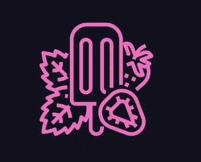

Nuestra Misión
En Vital Chill, nuestra misión es ofrecer helados y paletas saludables que permitan a las personas disfrutar de un sabor delicioso sin culpa. Nos comprometemos a utilizar solo ingredientes naturales y frescos, seleccionando cuidadosamente cada producto para brindar una experiencia única.
Queremos ser un referente en la comunidad, promoviendo estilos de vida saludables y fomentando la convivencia en un ambiente acogedor. Trabajamos con productores locales y adoptamos prácticas sostenibles para apoyar nuestra economía y cuidar el medio ambiente.
